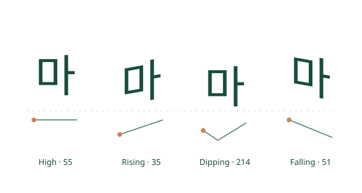

Write a pronunciation
Add pitch, duration or stress annotations in braces after Hangul text.
마{↗} 아{—} 가{!}WHOBORN · HANGEUL DAY 2026
Pitch becomes the flow of a letter.
Duration becomes its width.
Bring pronunciation to your Markdown.
Free · Open source · Runs in your browser · Version 1.0

OCTOBER 9, 2026 · A LETTER FOR HANGEUL DAY
Every year, Whoborn Inc. celebrates Hangeul Day with an event honoring King Sejong's creation of Hangul. This year, we have been exploring how Hangul can represent the pronunciation of as many of the world's languages as possible. We introduce MarkHangeul, an open-source Markdown tool for expressing the pitch, duration and other features of syllables.
We invite everyone to explore the source code, write their own examples, and connect the tool to their editors and services. We hope this small beginning will inspire more experiments in sharing the sounds of different languages.
Hangeul Day, October 9, 2026
With best wishes, Whoborn Inc. ↗
The current distribution is a JavaScript, WebAssembly and CSS web renderer. It does not include installable TTF, OTF or WOFF font files. Hangul transcriptions are learning approximations, supplemented by IPA and notes.
WRITE · SEE · SHARE
Add pitch, duration or stress annotations in braces after Hangul text.
마{↗} 아{—} 가{!}Edit the source and watch the preview update. Try the buttons below first.
마{toneContour=214}Export annotated Markdown, plain Markdown, standalone HTML or JSON, or connect the SDK.
renderMarkdown(source)LIVE EXAMPLE
마{toneContour=35}Choose a pattern to compare the letter's pitch and width.
Preparing the preview…
ONE SCRIPT · MANY VOICES
Compare pitch, phonation and checked syllables in Mandarin, Cantonese, Hanoi Vietnamese and Thai.
Choose from 12 pronunciation profiles across 11 languages, including English, French, German and Arabic.
Eight demonstration patterns are not a universal eight-tone system. This tool does not automatically transcribe every language or reproduce pronunciation exactly.
Explore language examples in the editor ↗The editor interface is currently in Korean. These English guides explain its main features.
OPEN FOR BUILDERS
Connect the same renderer to your web editor's preview. It processes standard Markdown together with Hangul pronunciation annotations.
<script type="module"
src="https://whoborn.github.io/MarkHangeul/sdk/markhangeul.js">
</script>
<mark-hangeul source="마{T2} 아{duration=long}">
</mark-hangeul>GitHub's Markdown pages do not execute scripts. Use this SDK in web editors, plugins or services that allow JavaScript.